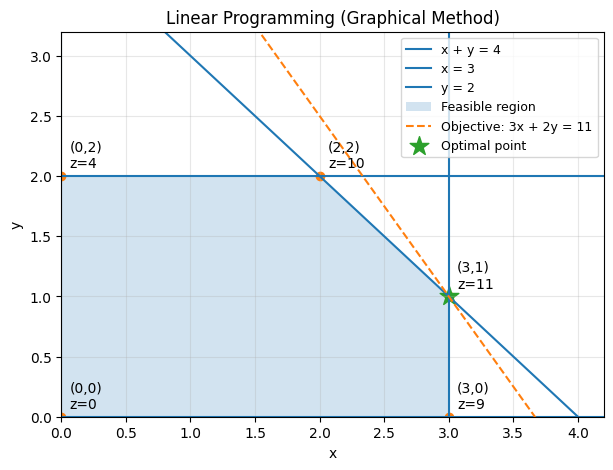

What is ‘optimization’?
Optimization
OR
최적화와 경영과학에 대한 개념 정리.
경영과학과 최적화
- 경영과학(Operation Research): 경영 또는 관리에 대한 공학
- 운영을 잘하게 돕는 과학적 의사결정 방법 전체를 의미함.
- 수리최적화 외에도 시뮬레이션, 데이터 분석 등이 포함됨
- 최적화(Optimization): 의사결정문제를 최적화모형으로 모형화하여 해법을 적용, 구현, 결과해석 및 분석을 포함
- 의사결정문제: 한정된 제약 하에서 추구하는 목표를 얻기 위해 선택지 중 결정하려는 상황 또는 문제.
최적화모형(수리모형)
- 현실의 문제를 수식으로 재정의한 것
- 구성요소: 의사결정변수, 목적함수, 제약식, 매개변수
최적화모형의 예
배낭문제(knapsack problem)
문제정의
담을 수 있는 무게가 최대 V인 배낭이 있다. 넣을 수 있는 물건은 총 N개이며,
각 물건 i의 무게는 v_i이고 배낭에 넣었을 때 p_i만큼의 효용이 발생한다.
배낭의 용량을 초과하지 않으면서, 가치의 합이 최대화 되려면 어떤 물건을 담아야하는가?구성요소 분해
- 결정변수: 각 물건 i를 담을지 말지
- 목적함수: 효용 최대화
- 제약조건: 최대용량을 넘지 않는다.
- 매개변수: 물건의 효용, 무게, 최대용량
수리식 작성
\[ \begin{aligned} maximize \quad & \sum_{i \in N} p_i\cdot x_i \\ \text{subject to}\quad &\sum_{i \in N} v_i\cdot x_i \\ & x_{i} \in \{0,1\} \quad \forall i \in N \end{aligned} \]
풀이법
- 파이썬 문법을 쓰는 gurobi, 구글의 solver, cplex 등의 해법을 적용한다.
- 수리모형에는 선형계획법, 비선형계획법, 정수계획법 등등 문제의 형태와 해법 존재여부로 구분한다.
- 최적화는 수리모형을 만드는 것 뿐만 아니라 해 존재여부, 최적해 존재여부, 해 또는 최적해를 찾는 과정을 포함한다.
선형계획법
- \(ax\le b\)의 형태로 제약식이 나타나며, 결정변수의 차수가 항상 1차인 것을 의미한다.
- 결정변수 나누기 결정변수의 형태는 일반적으로 비선형으로 볼 수 있다.
- 일반적인 풀이법으로 심플렉스 해법, 타원체 해법, 내부점 해법 등이 존재한다.
정수계획법
- 결정변수 중 하나라도 정수여야 한다는 조건이 붙으면 정수계획법으로 취급된다.
- 앞선 배낭문제의 경우 담는다 담지 않는다를 0 또는 1로 표현하기에, 정수계획법 문제로 분류한다.
- 결정변수가 모두 정수형일 경우 순수정수계획법, 연속인 것과 섞여있다면 혼합정수계획법으로 분류한다.
- 0 또는 1의 이진 결정변수의 경우 이진정수계획법(Binary Integer Programmin)으로 분류한다.
- 정수계획법의 경우, 선형과 달리 일반적으로 효율적인 해법이 없다.

정수계획법의 어려움
직관적으로 이해하기 쉬운 심플렉스 해법으로 예를 들어보자. 심플렉스 해법은 가능해 영역의 꼭짓점을 따라가는 방식이다. 위의 그림에서 하늘색 평면은 가능해 영역, 주황색 기울기는 목적함수의 등고선 정도로 볼 수 있겠다. 가능해 영역이 지금처럼 모서리가 잘려서 나타나는 이유는 선형제약식에 의해 절단되었기 때문이다. 이때 최적해는 꼭짓점에서 나타나는 것을 볼 수 있다.
특별한 예외가 아닌, 선형계획법의 특징이다. 가능해가 존재한다면 최적해중에 꼭짓점인 해가 반드시 존재한다. 그런데 정수조건이 포함된다면, 최적해가 (3.1, 0.9)로 나타날 때 곤란할 수 있다. 이는 가능해가 될 수 없기 때문이다. 반올림을 하거나 내림을 한다고 생각할 수 있는데, 그렇게 했을 때 나타나는 해가 가능해일지, 그리고 최적해일지는 장담할 수 없다. 그런 맥락에서 정수계획법에서 해를 찾는 방법은 기본적으로 열거법의 형태를 갖는다.
정수계획법
그럼에도 정수계획법을 쓰는 이유는 무엇일까? 사람 23.3명을 고용할 수는 없어서? 그것도 맞지만, 더 중요한 이유가 있다. 정수로 논리를 표현할 수 있기 때문이다.
- “수업 2와 3을 수강하기 위해서는 수업 1을 수강해야한다.” 를 수리식으로 표현할 수 있다.
- \(x_2+x_3 \le 2 \cdot x_1\)